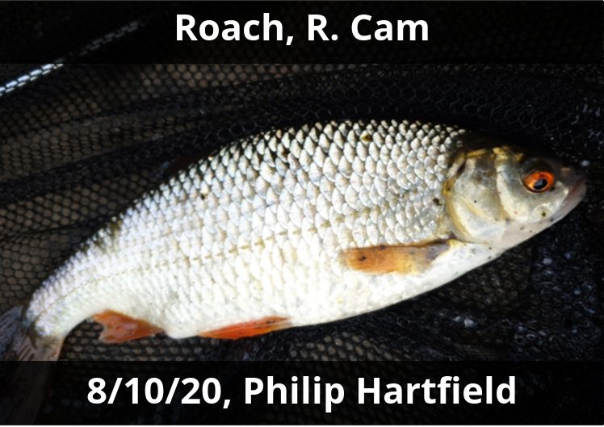
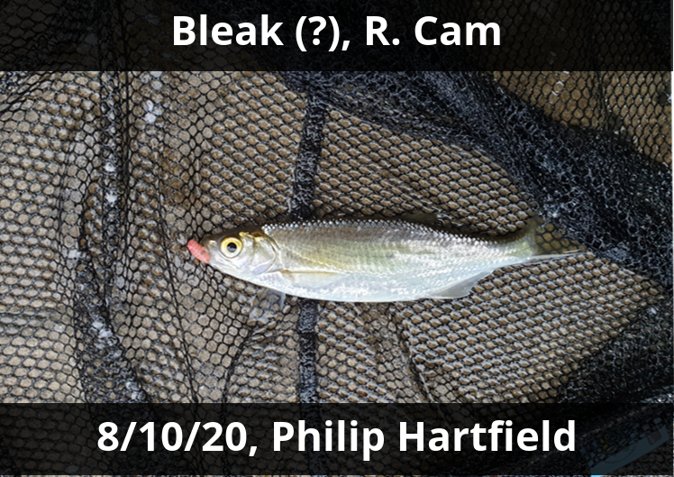
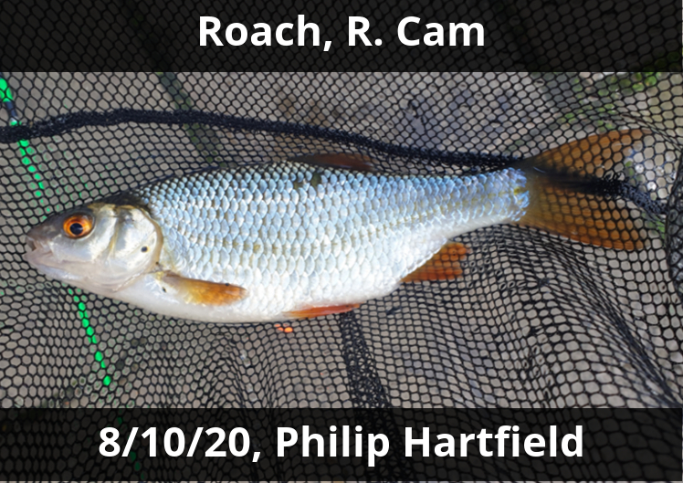
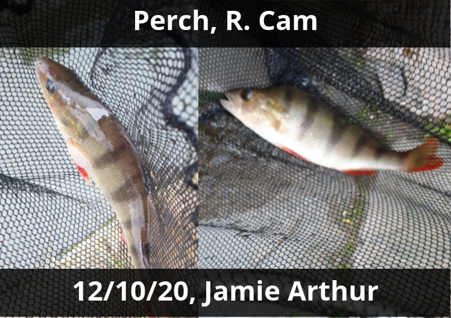

Gallery
Fishes caught around Cambridgeshire
Catch of the month - Jamie Arthur
Perch, R. Cam by Orgasm Bridge, 12/10/20





If you would like a fish you caught around Cambridgeshire to be featured in the gallery above, send it by email to pdbh2@cam.ac.uk.
Be sure to include the species, catch date/location, and size/weight if you know them, as well as whether you would like to be credited.